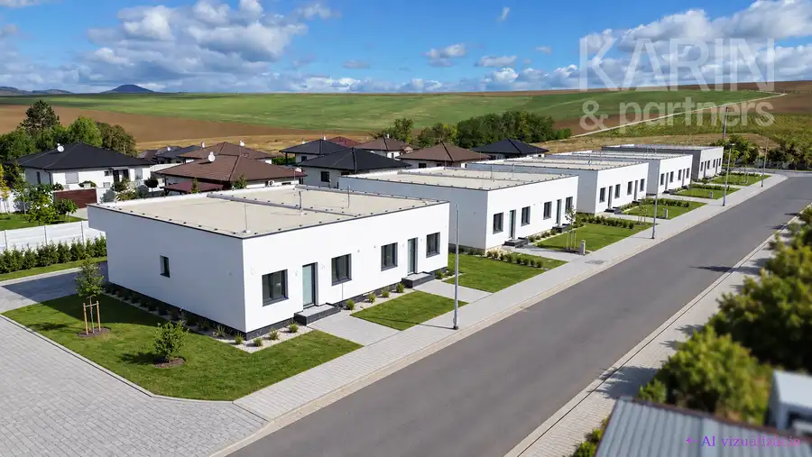
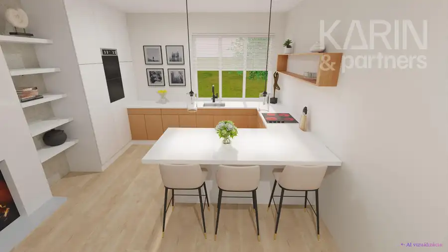

Nová Koliba- prémiový stavebný pozemok 687m² priamo pod lesom
Nové Mesto, Bratislava
- Plocha687 m²
- VlastníctvoOsobné
O nehnuteľnosti
VÝNIMOČNÝ STAVEBNÝ POZEMOK NA NOVEJ KOLIBE – 687 m² | UZAVRETÝ AREÁL | POD LESOMPonúkame na predaj výnimočný stavebný pozemok s výmerou 687 m² v uzavretom rezidenčnom areáli na ulici Na Briežkoch, priamo pod lesom, v jednej z najvyhľadávanejších a najprestížnejších lokalít Bratislavy – Nová Koliba.Pozemok sa nachádza v tichej slepej ulici za rampou, čo zabezpečuje vysokú mieru súkromia, bezpečia a pokojného bývania v bezprostrednom kontakte s prírodou.Veľkou výhodou je prístup z dvoch strán po asfaltovej komunikácii, pričom oba prístupy vedú zo slepých ulíc. Na pozemku sú k dispozícii všetky inžinierske siete.KÚPNA CENA POZEMKU: 639 000 €Kúpna cena 639 000 € predstavuje cenu samotného pozemku.VOLITEĽNÁ SÚČASŤ PREDAJA – PROJEKT STAVBYPre záujemcu, ktorý chce využiť pozemok na okamžitú realizáciu prémiového rodinného domu, je voliteľnou súčasťou predaja projekt stavby domu a súvisiaca projektová dokumentácia.Projekt je spracovaný v dvoch alternatívach dispozičného riešenia – 4-izbový a 5-izbový variant. Navrhovaná úžitková plocha domu je približne 280 m², riešená na troch podlažiach.Projekt a súvisiaca projektová dokumentácia: 20 000 €Súčasťou projektu je vydané územné rozhodnutie (2024) a projektová dokumentácia so stavebným povolením v procese / s podanou žiadosťou o stavebné povolenie.Budúci majiteľ tak môže získať výraznú časovú výhodu a po dokončení povoľovacieho procesu pristúpiť k realizácii domu bez potreby začínať celý proces od začiatku.PRE KOHO JE POZEMOK IDEÁLNY?- pre klienta, ktorý hľadá prémiové bývanie v Bratislave -pre záujemcu o súkromie, bezpečie a bezprostredný kontakt s prírodou -pre investora, ktorý hľadá hodnotný stavebný pozemok v atraktívnej lokalite- pre klienta, ktorý chce realizovať vlastný projekt a zároveň ocení možnosť využiť už pripravenú projektovú dokumentáciu-pre záujemcu, ktorý chce mať možnosť kúpiť samotný pozemok bez projektovej dokumentácieNOVÁ KOLIBANová Koliba patrí dlhodobo medzi najžiadanejšie rezidenčné lokality Bratislavy. Ponúka jedinečnú kombináciu prírody, súkromia, prestížnej adresy a výbornej dostupnosti do centra mesta s nádherným výhľadom na mesto.Táto ponuka je zaujímavá nielen svojou polohou a parametrami pozemku, ale aj možnosťou voľby – kúpiť samotný pozemok alebo využiť pripravený projekt domu a súvisiacu dokumentáciu.Kúpna cena pozemku: 649 000 €Projekt stavby a súvisiaca projektová dokumentácia: 20 000 € – voliteľná súčasť predajaV prípade záujmu radi poskytneme bližšie informácie, projektovú dokumentáciu a podklady k aktuálnemu stavu povoľovacieho procesu.Kontakt:Zuzana Dirgasová+421 902 566 396dirgasova@karinpartners.sk
Parametre
| Druh | Pozemok pre rodinné domy |
|---|---|
| Dátum zverejnenia | 3. 6. 2026 |
| Plocha pozemku | 687 m² |
| Terén pozemku | Mierne svahovitý |
| Typ | Predaj |
| Vlastníctvo | Osobné |
Kde to je


Mohlo by Vás zaujímať

DomNové10 239 000 €4- izbové rodinné domy v Nitre - Janíkovce Nitra 84 m² 8 NOVOSTAVIEB PRE MODERNÉ RODINNÉ BÝVANIE | 350 – 650 m² POZEMKY | 239 000 €Ponúkame na predaj 8 nových 4-izbových rodinných domov v mestskej časti…
DomNové10 219 000 €Predaj -novostavba 4 izbového rodinného domu v Gbeloch, okr. Skalica Gbely 130 m² Váš nový dom v centre Gbelov. Nie je to len dom. Je to priestor, ktorý si môžete vytvoriť presne podľa svojich predstáv.Predstavte si ráno, keď si…